Library SetupBlocks3D uses three main libraries: You can download them at: * For accuracy reasons, this is likely to change to an older G3D version in the future
All of these are set up in their respective subfolder under C:\libraries.
Setup is fairly quick and easy, though ODE 0.6 will need to be manually compiled. Prerequisites
Ensure you have already either set up Visual Studio 2003 or Visual Studio 2005. 1. Graphics3D
Graphics3D has a simple installer. Default settings should work fine in general. 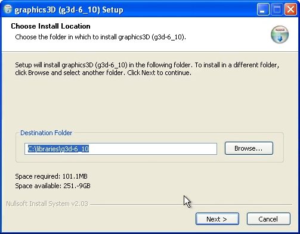 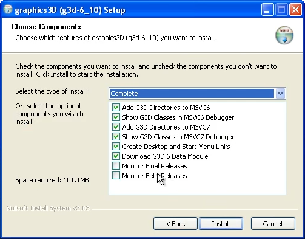 Proceed to install. If you see this dialog, you can disregard it, as Blocks3D has the library paths setup: 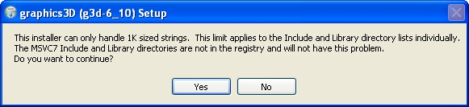 Graphics3D setup is now complete! 2. SDL 1.2
SDL is also fairly simple, but does not have an installer. Instead, you have to extract it.
Under Windows, copy the SDL folder into C:\libraries: 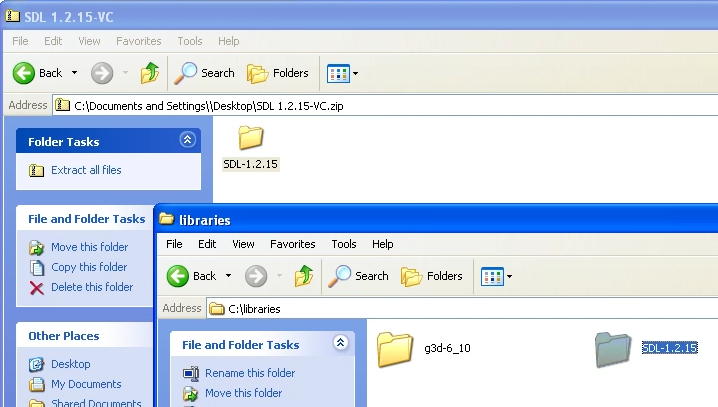 You will want to ensure that your SDL folder is named sdl and does not have a child SDL folder: 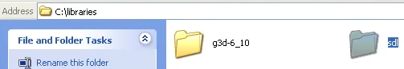 SDL setup is now complete! 3. ODE 0.6
ODE 0.6 is a lot more complicated, and it does depend on what IDE you are going with, but in general the steps are identical across both Visual Studio 2003 and 2005. 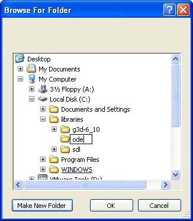 Ensure that it is indeed the contents, and not a parent folder: 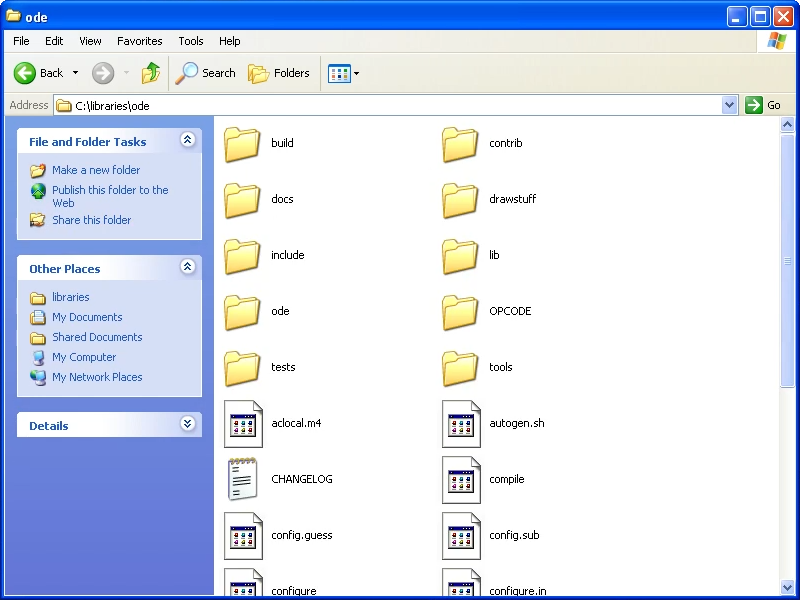 If it is the parent folder, simply copy them into the main directory. Now you'll want to navigate into the "build" directory, and select the version of Visual Studio you will be using: 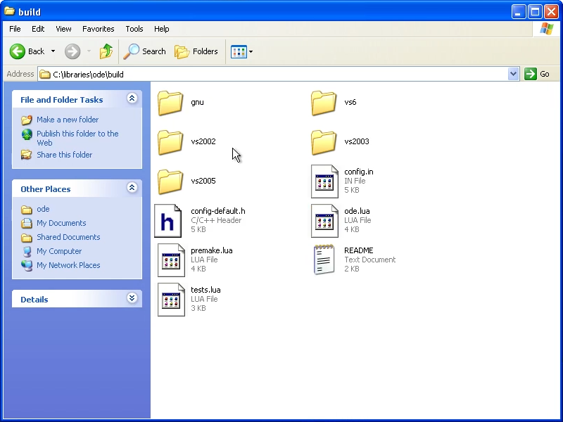 Open up the solution file in your Visual Studio: 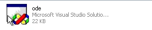 Within Visual Studio, you will want to build ReleaseLib and DebugLib. Simply select one version to build: 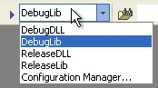 and go to Build->Build Solution: 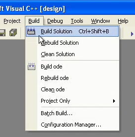 Then repeat for the next version. You may also be able to save time by just building ode, rather than the entire solution, but YMMV. End ResultAs the end result, you should now have a C:\libraries directories like so: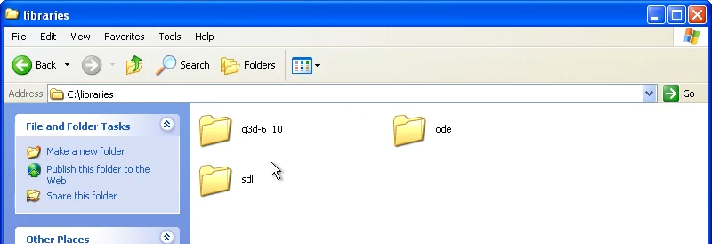 and are now ready to build! |
|